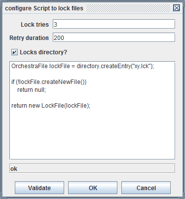

Script to lock files

Topic content
Description
With a lock script the user may implement its own locking method using Java. The script has to be written in Java. Actually it is the implementation of the method lockFile in a generated class extending the abstract base class AbstractFileLockFactory.
public abstract class AbstractFileLockFactory {
public OrchestraFile directory;
public boolean exists(String filename) throws IOException {
OrchestraFile file = directory.createEntry(filename);
return file.exists();
}
public void delete (String filename) throws IOException {
OrchestraFile file = directory.createEntry(filename);
file.delete();
}
abstract protected Lock lockFile (String filename)
throws EpiBaseException, IOException;
}
That means within the lock script the current directory is accessible and the script may use the methods exists and delete. Furthermore it may call all Methods of the interface OrchestraFile.
The method lockFile returns an instance of the Interface Lock:
public interface Lock {
void release () throws IOException;
}
The method release is called when the channel releases the file. Currently there are two implementations of the interface, Lockfile and StreamLock:
public class LockFile implements Lock {
private OrchestraFile lockedFile;
public LockFile (OrchestraFile locked) {
this.lockedFile = locked;
}
public void release() throws IOException {
lockedFile.delete();
}
}
public class StreamLock implements Lock {
static final private Logger logger = Logger.getLogger("emds.runtime.file");
private final String lockFileName;
private final Closeable lockedStream;
public StreamLock(String lockFileName, Closeable lockedStream) {
this.lockFileName = lockFileName;
this.lockedStream = lockedStream;
}
public void release() throws IOException {
logger.fine("close locked stream for " + lockFileName);
lockedStream.close();
}
}
So you may use these classes in your lock script.
Configuration
To configure the method click on the button labeled with three dots.

Here the user may enter its lock script. Click on the button to check if the java source code is valid.
You also can configure the number of lock tries and the duration between retries. Note that the duration is given in milliseconds and that the duration is doubled each time but no longer than one minute. So in the example above, after the second try it waits 200 ms, than 800 ms and so on.
Example for a lock script
Above you see an example of a lock script. Basically it does the same as the method Check and create lock file already does.
For the generated class the following default imports are already done:
import emds.epi.impl.landscapedirectory.OrchestraFile;
import emds.epi.decl.exceptions.EpiBaseException;
import java.io.IOException;
import emds.epi.impl.adapter.file.lock.LockFile;
import emds.epi.impl.adapter.file.lock.Lock;